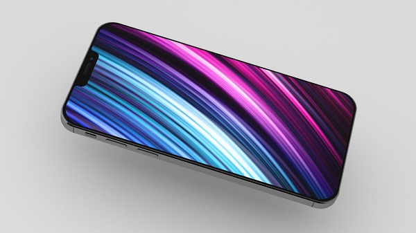
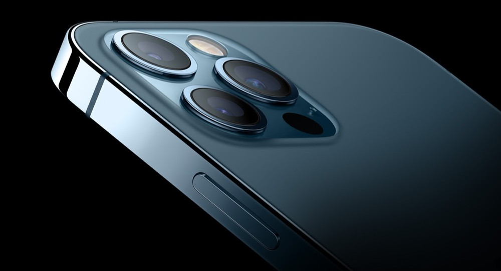
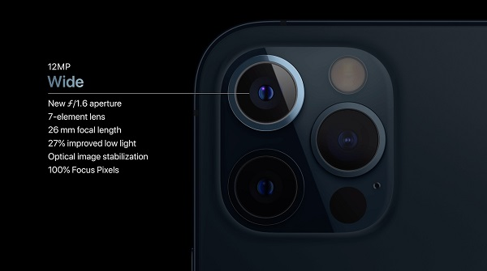
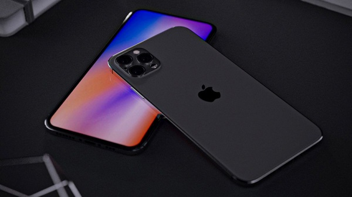
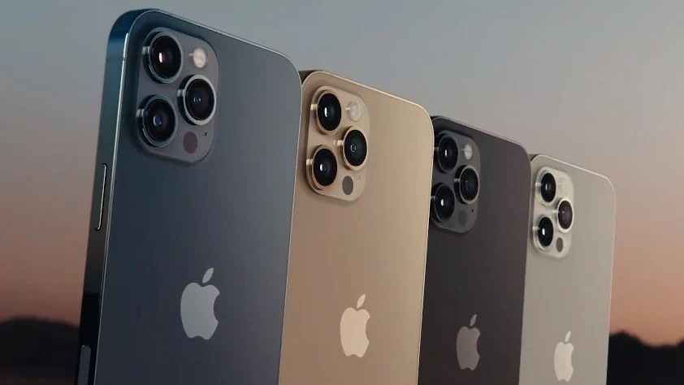
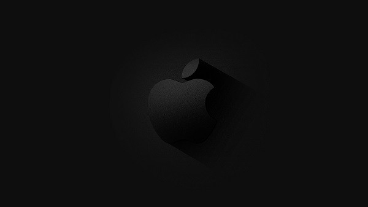

O maior modelo da nova geração, o iPhone 12 Pro Max chega com tela de 6,7 polegadas. O display é OLED, bem como no iPhone 11 Pro Max de 6,5 polegadas, mas promete mais brilho e cores mais vivas. De acordo com a fabricante, o lançamento conta com 3,4 milhões de pixels, o maior número em um iPhone até hoje. Ambos contam com o painel Super Retina XDR, que traz melhorias no controle do brilho. O visual também mudou. A nova geração do smartphone trocou as bordas curvas por um design mais quadrado, semelhante ao do antigo iPhone 4. Ambos contam com acabamento brilhante em aço inoxidável, mas as cores estão diferentes. Enquanto o iPhone 11 Pro Max pode ser encontrado em dourado, verde, prata e cinza espacial, a nova geração chega nas cores azul, dourado, prateado e grafite. O iPhone 12 Pro Max mantém o notch presente na geração anterior, mas as bordas ficaram mais enxutas. Para maior segurança, ele ganhou a tecnologia Ceramic Shield (escudo cerâmico, em português) na tela. De acordo com a fabricante, o vidro é mais resistente do que qualquer outro display para celular e promete quatro vezes mais durabilidade contra quedas em relação ao antecessor.

Ambos os smartphones contam com câmera tripla na traseira, todas com a mesma resolução de 12 MP. Principal com lente angular e abertura de f/1.8 (iPhone 11 Pro Max) e f/1.6 (iPhone 12 Pro Max) Teleobjetiva com abertura de f/2.0 (iPhone 11 Pro Max) e f/2.2 (iPhone 12 Pro Max)Ultra wide de 120º com abertura de f/2.4.

O iPhone 12 Pro Max, contudo, conta com sensores maiores, aumentando a quantidade de luz capturada pela câmera ultra wide. Esta modificação deve se traduzir em fotos consideravelmente melhores em ambientes com pouca luz na hora de registrar imagens com ângulo mais aberto.
O conjunto fotográfico também recebeu aprimoramentos de software, com o modo noturno recebendo melhorias e podendo ser usado até mesmo para produzir fotos em modo retrato graças ao scanner LiDAR, que mede o tempo que a luz leva para refletir num objeto, criando um mapa de profundidade de qualquer espaço. Para selfies, ambos contam com câmera 12 MP e abertura de f/2.2. Com o novo iPhone, contudo, é possível produzir selfies no modo noturno.

Além disso, agora é possível gravar com a tecnologia Dolby Vision no novo aparelho. Para isso, o iPhone 12 Pro Max usa a câmera TrueDepth, também presente no iPhone 11 Pro Max e responsável pelo desbloqueio do telefone por meio do Face ID, reconhecimento facial da Apple. No quesito gravação de vídeos, a gravação HDR foi de 8 bits da geração anterior para 10 bits, o que tende a permitir vídeos mais realistas. O destaque, contudo, fica por conta da possibilidade de gravar e editar vídeos com a qualidade do Dolby Vision, algo nunca visto em um smartphone até então.
Enquanto o iPhone 11 Pro Max rodava com processador Apple A13 Bionic, o sucessor chega com o novo A14 Bionic, o primeiro chip de cinco nanômetros em um smartphone. Mais avançado que o antecessor, ele promete ser mais rápido e mais eficiente no consumo de energia. De acordo com a fabricante, o novo processador é o melhor para dispositivos móveis do mercado. Para armazenamento, o iPhone 11 Pro Max está disponível em opções com 64 GB, 256 GB e 512 GB, enquanto o iPhone 12 Pro Max começa em 128 GB e também pode ser adquirido em versões de 256 e GB e 512 GB de espaço para dados.

A Apple não informou a capacidade exata da bateria do iPhone 12 Pro Max em mAh. Porém, neste quesito a expectativa é que não haja tanta diferença entre os celulares. Ambos prometem oferecer autonomia para 20 horas de reprodução de vídeos e até 80 horas de reprodução de áudio. Porém, a novidade em relação ao carregamento está na introdução do MagSafe ao iPhone. A Apple não informou a capacidade exata da bateria do iPhone 12 Pro Max em mAh. Porém, neste quesito a expectativa é que não haja tanta diferença entre os celulares. Ambos prometem oferecer autonomia para 20 horas de reprodução de vídeos e até 80 horas de reprodução de áudio. Porém, a novidade em relação ao carregamento está na introdução do MagSafe ao iPhone. O conjunto de ímãs do MagSafe foi adicionado à parte traseira do smartphone, permitindo conectar de forma magnética diversos acessórios como capas protetoras. A principal função da tecnologia, contudo, é o aprimoramento da recarga sem fio no dispositivo, conectando o aparelho a carregadores de forma mais rápida, incluindo modelos de terceiros. Além disso, a Apple promete que agora é possível reabastecer o smartphone sem utilizar fios duas vezes mais rápido que na geração anterior.

O iPhone 12 Pro Max sai da caixa com com o iOS 14 instalado, versão mais recente do sistema operacional que também já está disponível para o iPhone 11 Pro Max. Portanto, ambos contam com widgets, um novo aplicativo de tradução e Biblioteca de apps para organizar os programas do celular. Com relação aos recursos adicionais, o lançamento chega com Face ID, sistema de reconhecimento facial presente também no antecessor. Os dois telefones ainda permitem o uso de dois chips de operadora ao mesmo tempo, graças à compatibilidade com o eSIM e contam com classificação IP68 de resistência à água que agora foi aprimorada. A nova geração pode ficar imersa em até seis metros por até 30 minutos, enquanto a versão anterior prometia resistência a até quatro metros. O iPhone 12 Pro Max conta ainda com conexão 5G, sendo a primeira linha de iPhone a trazer a conectividade à internet de quinta geração. Diferente da geração anterior, o iPhone 12 Pro Max chega sem fones de ouvido e plugue de tomada na caixa. De acordo com a fabricante, a decisão foi tomada com base em questões ambientais. Com a retirada dos itens, a caixa ficou mais fina. Agora, além do iPhone, a caixa do novo smartphone vai trazer apenas um cabo de USB-C para Lightning compatível com recarga rápida.

O recém-anunciado iPhone 12 Pro Max ainda não tem data para chegar ao Brasil e os preços da linha iPhone 12 ainda não foram divulgados. Nos Estados Unidos, o aparelho pode ser adquirido por US$ 1.099 (128 GB), US$ 1.199 (256 GB) e US$ 1.399 (512 GB). Vale lembrar que todos os modelos da linha iPhone 12 não trazem mais adaptador de tomada e fone de ouvido na caixa. Quem não tiver estes componentes deverá comprá-los à parte. A decisão causou revolva em fãs da marca. O iPhone 11 Pro Max chegou ao Brasil em outubro de 2019 por preço sugerido a partir de R$ 7.599. Hoje o smartphone pode ser encontrado por valores partindo de R$ 6.930.
Peça o Seu!
Faça aqui seu pedido antecipado